全台款待空間巡禮
從台北總部的和風烏托邦，到台中、高雄、花蓮的款待足跡。
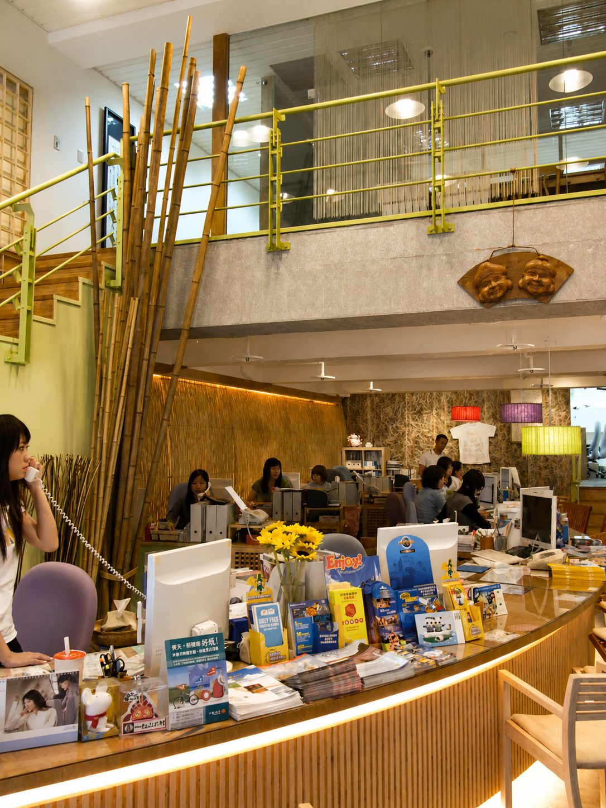
旅亭 ‧ 出發前的停留
從博愛路街道踏上這座被翠綠草皮與向日葵環繞的雙向手扶梯，在天喜內部美學中被命名為「旅亭」。這裡沒有辦理手續的催促，只有旅遊手冊散發的紙張氣味與溫馨的木質暖光。在您出發前往日本前，旅程的序章已在這裡悄然展開。
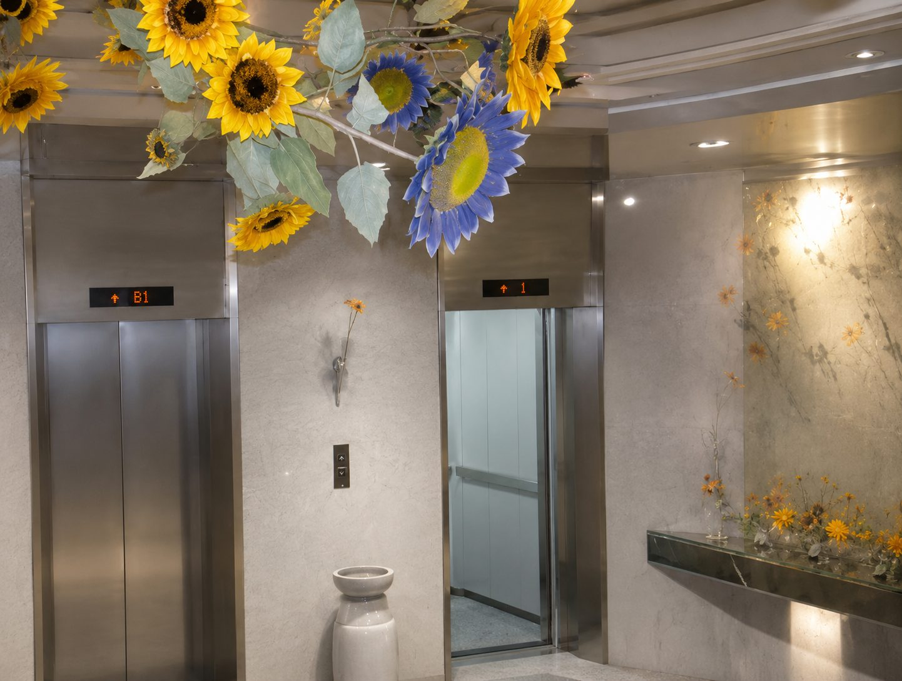
流水與四季的自然轉折
扶梯上升的盡頭，是一面溫潤流動的水牆。這裡並非普通的辦公室梯廳，而是配合日本的「春櫻、夏綠、秋楓、冬雪」，由專人親手佈置季節盆藝與花道。流淌的水聲阻隔了外界的嘈雜，讓您等候電梯的片刻，就已經進入了旅行的寧靜。
「電梯向上，我們跨越了物理的樓層，卻走得離客人的心更近。
從 2F 水牆的季節流動，到 10F 那道寫著『請往這走』的溫慢木門。
天喜的款待，始終在您抵達的第一秒，就完成了它的儀式。」
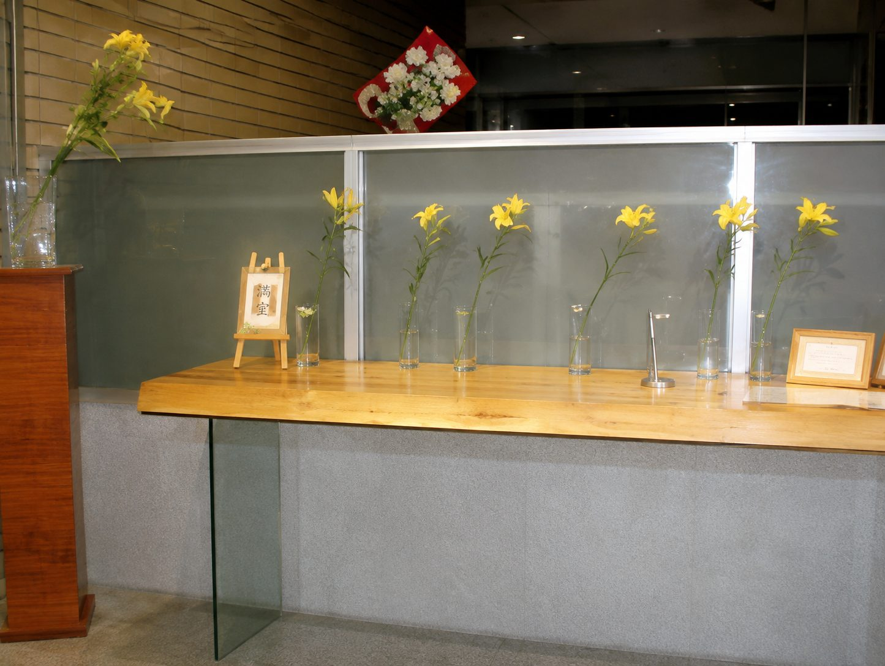
こちらへどうぞ。請往這裡走
走出十樓電梯，大門旁的木架上寫著溫柔的「こちらへどうぞ」。原木長桌上每日供奉著新鮮綻放的黃百合花藝，插花方向固定向外傾斜 45 度角，那是日文「請往這走」的手勢比喻。大廳中央的圓形服務台命名為「小豆島 1001」，完成對客人的第一秒款待。
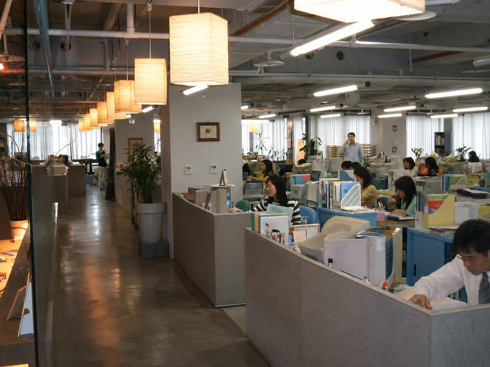
實木與暖燈間的業務心臟
這裡打破了傳統旅行社雜亂的 OA 隔屏，採用「現代時尚雅韻」的實木質地與柔和燈光佈置。樑柱中央高高懸掛著「大黑天與惠比壽」福神面具，默默守護著每一段出發的腳步。大阪、廣島、東京等戰隊在此運籌帷幄，是天喜最繁忙的作戰核心。
「在十樓，是同仁為了您的旅程日夜伏案、運籌帷幄的效率心臟；
而當我們沿著『最上川』的走道拾級而上，茶香撲鼻，我們便走入了十一樓的暖意中。
這是為了告訴每位前來的旅人：在紛擾的日常裡，總有一處和風烏托邦，正為您溫慢圍爐。」
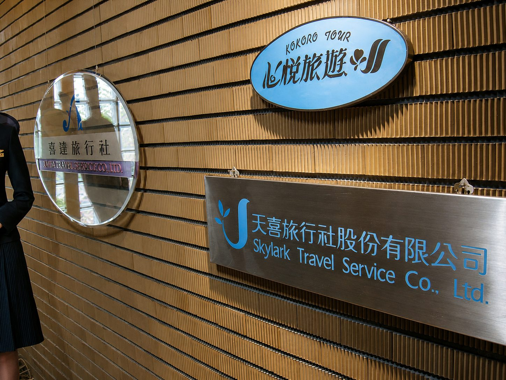
走入極致和風的玄關
踏入十一樓，迎面而來的是古色古香的屏風與插花，將辦公大樓的生硬感完全隔開。從這裡開始，空間的節奏慢了下來，空氣中開始散發著淡淡的塌塌米草香與線香，指引著貴賓走入天喜為您精心打造的和風沙龍。
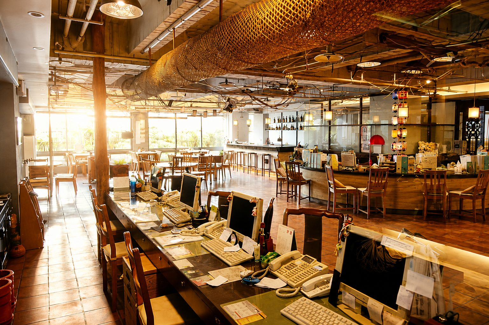
最上川通道與新都里吧台
設計圖上，郭大哥親筆手寫標註了「最上川」與「長良川」兩條日本名川，以此命名這條溫潤的實木長廊。水流的動線引導著貴賓前行，匯聚在純日式的「新都里吧台」。在這裡，有專人為每位貴賓沏上等的日式綠茶，在出發前就感受到款待的凝視。
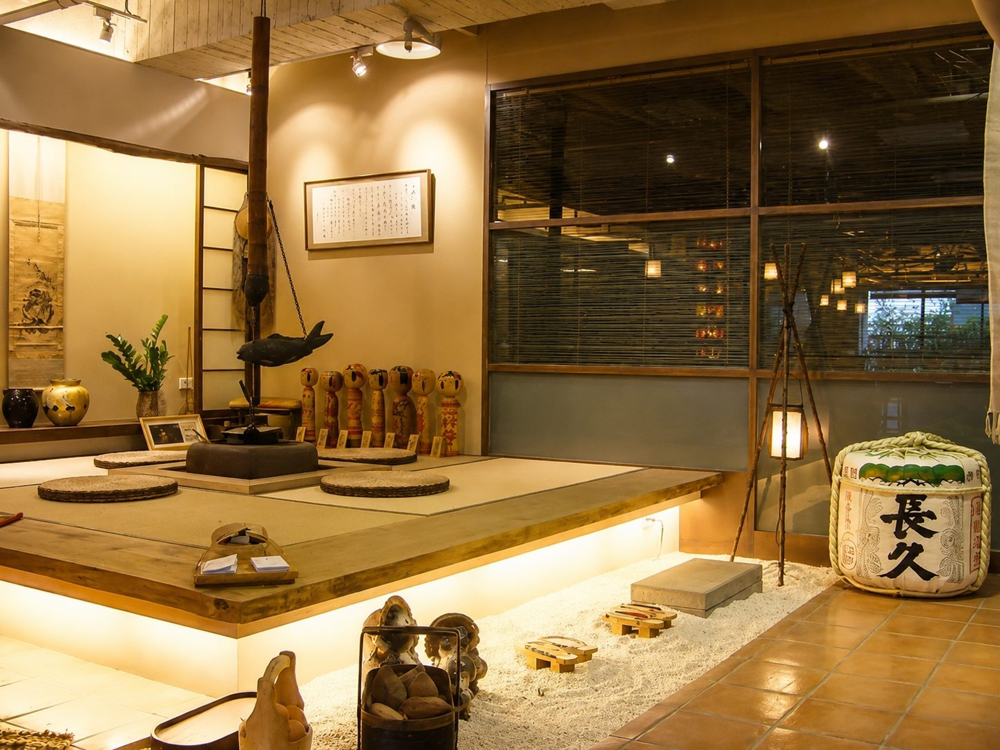
江戶古民家的茶香與溫暖
這是一個架高的塌塌米茶室空間。中央設有古民家圍爐（Irori），上方懸掛著魚形自在鉤。塌塌米後方整齊排列著多尊手工木雕的日本東北「芥子娃娃 (Kokeshi)」，地上鋪設白色碎石與木屐。在這裡，沒有推銷的急迫，只有對旅行心願的細緻聆聽。
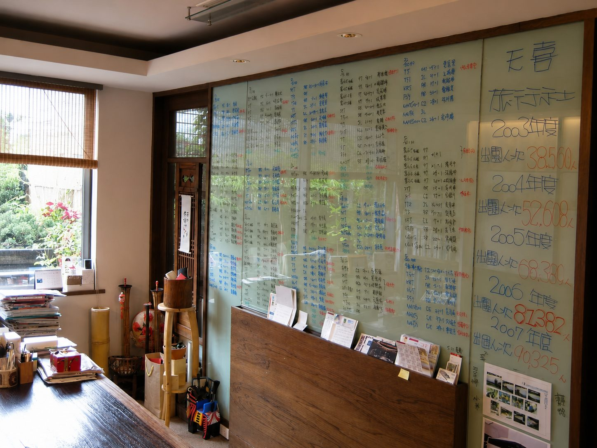
竹軒 ‧ 掌控機位資源的作戰核心
表面上是幽靜的竹林商談區「竹軒」，在天喜的實務運作中，卻是掌控全省日本線機位資源的「切團區」。同仁在此進行團體切位與機票控位，是天喜強大成團實力與後勤的保證。旁邊的「利園」則是決策核心，為每一趟旅程提供最堅實的支持。
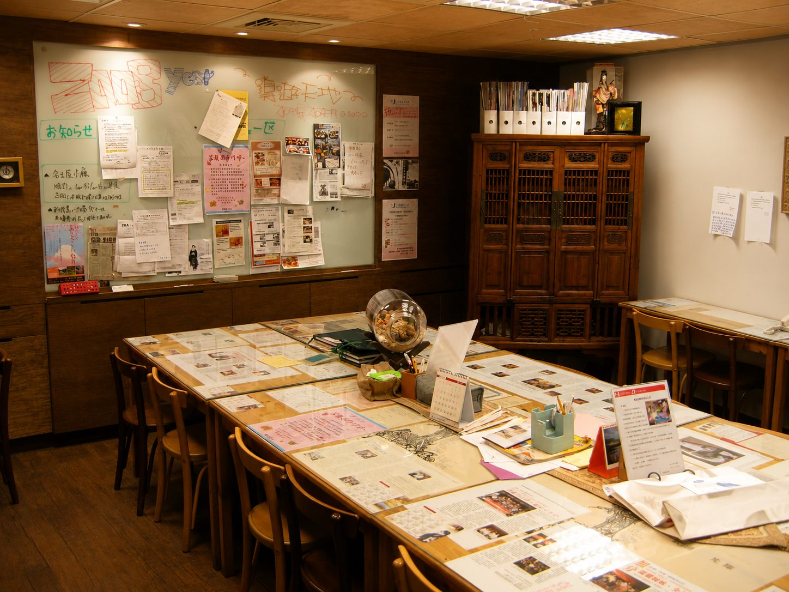
集會齋 ‧ 傳奇導遊軍團的孵化地
圖紙上標記為集慧齋的會議室，對於天喜人而言，這裡是無數傳奇導遊的「導遊室」。多少個深夜，導遊們在此繳交客戶意見表、相互傳承款待的真功夫，在嚴厲的大會審查與無私的經驗分享中，將「款待」的信念代代傳承下去。
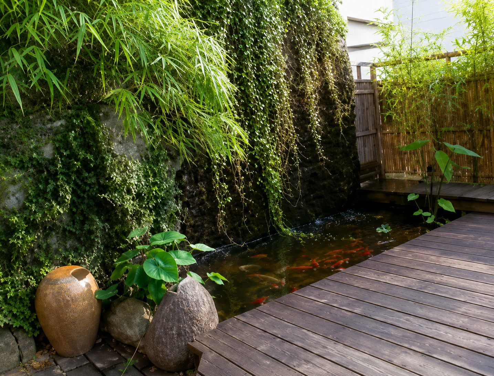
大樓高空中的枯山水
於高空辦公大樓中，築起一抹和風庭園。這是郭正利將室內設計才華，發揮在帶給職員安靜撫慰的空間哲學。他相信，只有職員每天工作時能感受到放鬆與愉悅，客人的抱怨就會減少，服務的溫度才能真正傳遞出去。
「所有的感動都不是憑空而來。
十一樓的茶香、圍爐的煙火氣，在十二樓的高效率票務與大會決策中，化成了最堅實的後盾。
款待是靈魂，而專業是骨骼。這，是一切創意的原點。」
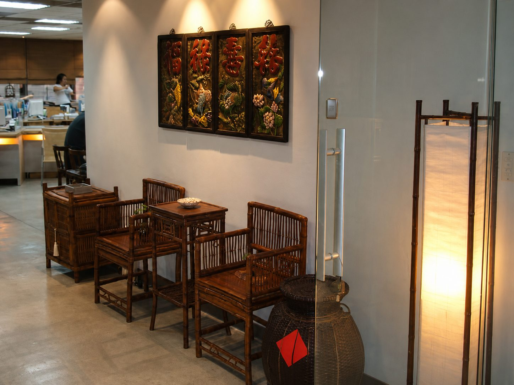
自由行票務 ‧ 堅實的商務後盾
十二樓是高效率票務與商務訂單的後盾，也是天喜「海鷗隊」（國際自由行）與「金讚隊」（主力團體）等王牌業務戰隊的作戰基地。這裡有著對票務運作的極高專注，在繁忙的電話聲中，以零出錯 of 專業，守護著每一位旅客的航程。
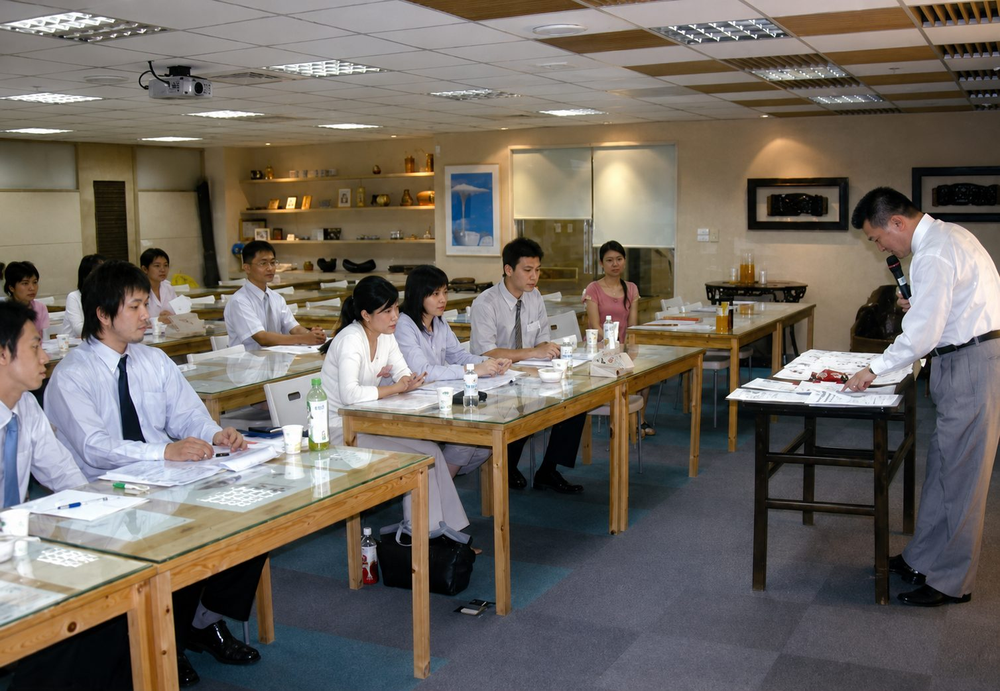
飛向創意的原點
大集會齋（會議室）融合中式雕花家具與日式紙障門。這是高層召開戰略大會、腦力激盪出無數震撼業界的行銷方案的「創意原點」。我們深深地相信，所有服務與創意的原點，皆源自對旅人一舉一動的細膩凝視。
「便宜的價格會被遺忘，但極致的感動會被記住。」
天喜大樓 2F 電梯搭乘大廳 ‧ 水牆與四季風情佈置
遍地開花的向日葵：全台支店
天喜的和風美學不只在台北。台中、高雄、花蓮，皆承襲了同等尊榮的款待規格。
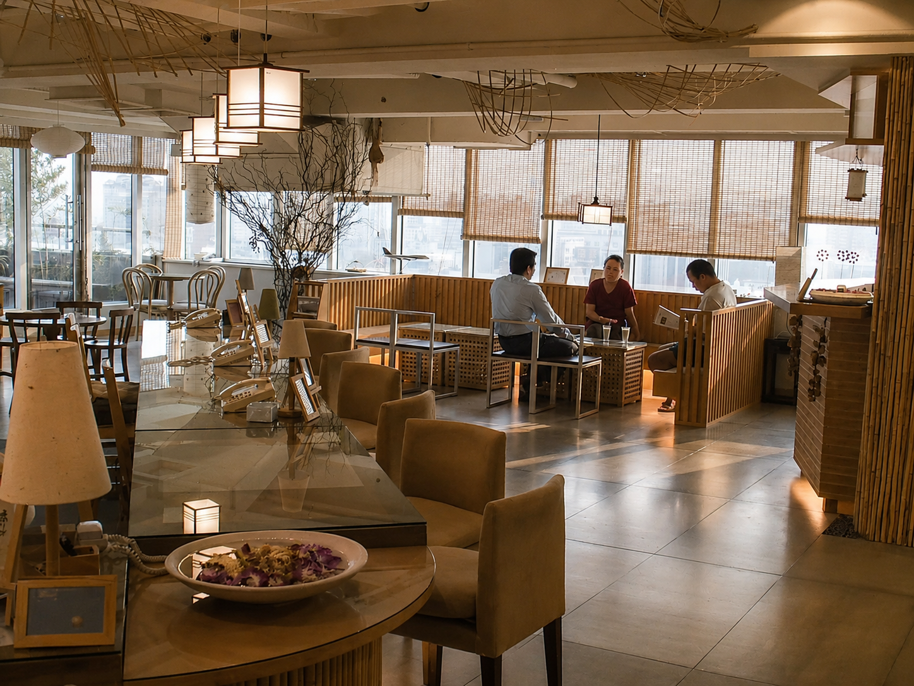
天喜 台中支店 (大墩十街)
延續本社的暖色調實木設計與挑高大廳，為中台灣的貴賓提供最優雅的和風諮詢環境。
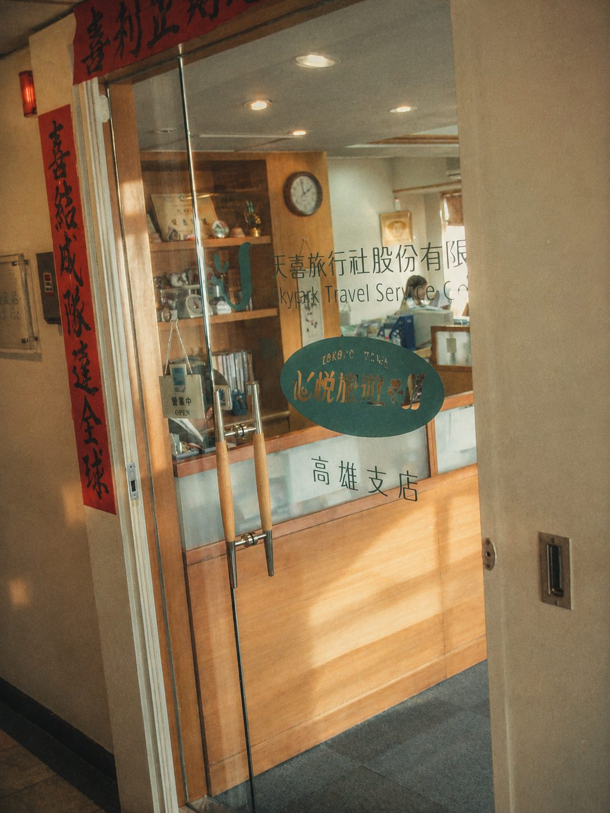
天喜 高雄支店
自購上百坪辦公室，以現代時尚的櫃台和貼心的日本觀光資料展示牆，守護南部旅人的心願。
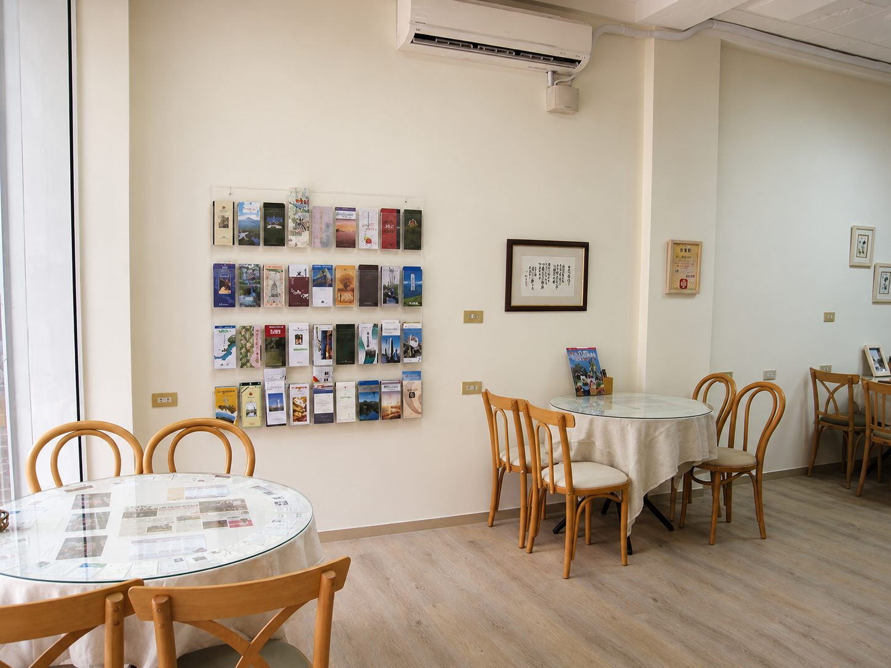
天喜 花蓮支店 (中山路)
溫潤的純木質接待區，將款待的觸角延伸至東台灣，展現天喜對全台旅人一視同仁的情義與溫度。
「在博愛路總部規劃的每一趟旅程，都在機場出發的那一刻得到印證。
郭大哥總是要求導遊，在機場親手為您的行李套上透明防塵套，並遞上一朵紅玫瑰。
天喜人常說，我們的服務不是 SOP，而是對每個人一舉一動的深切凝視。
因為款待，是讓人感到被好好照顧的尊嚴。」
空間の解讀 ‧ 垂直空間指南
比對原始中文存檔說明與設計空間之核心印記，還原當年博愛路本社的設計魂